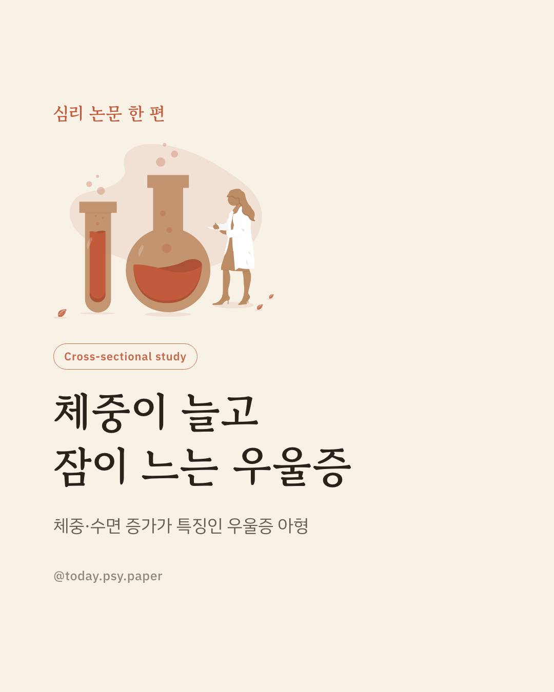
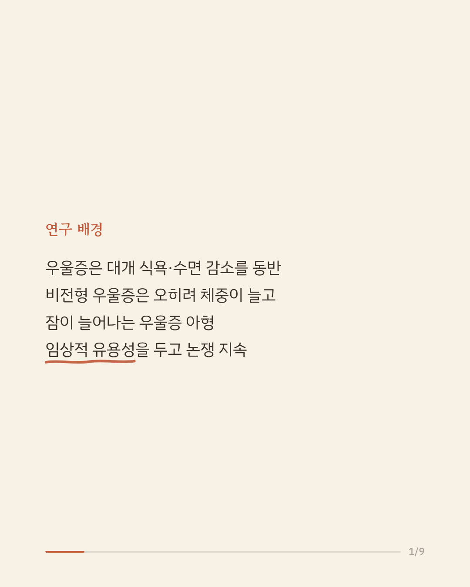
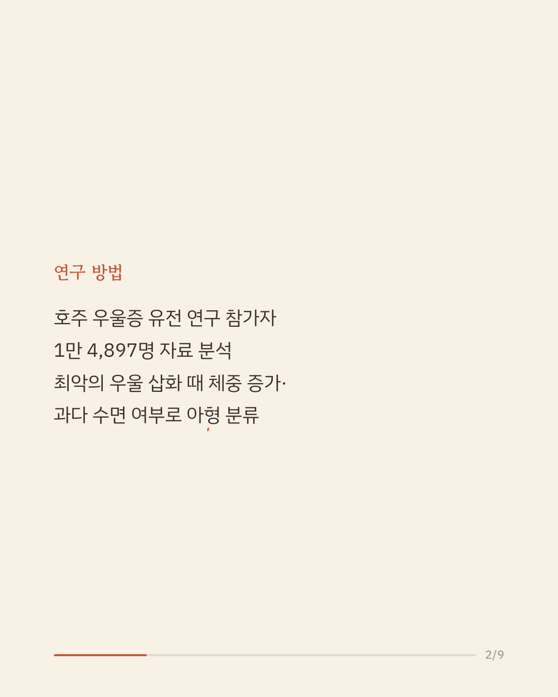
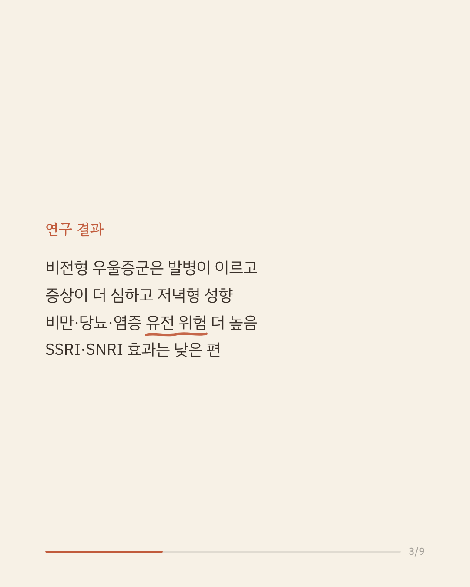
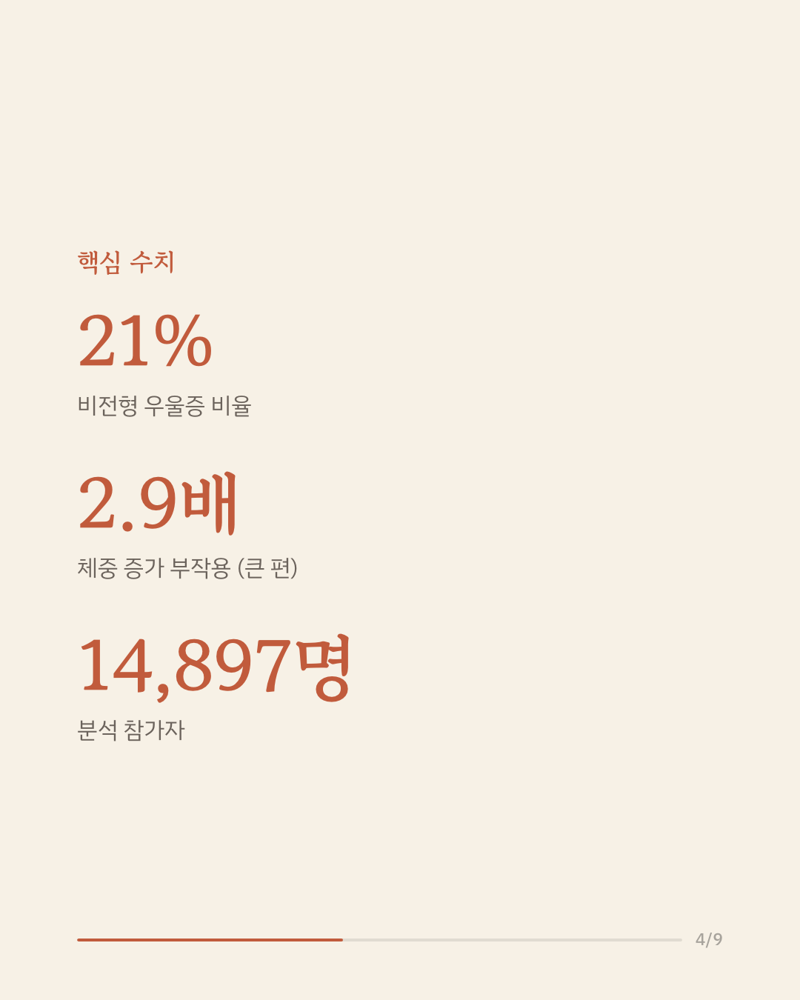
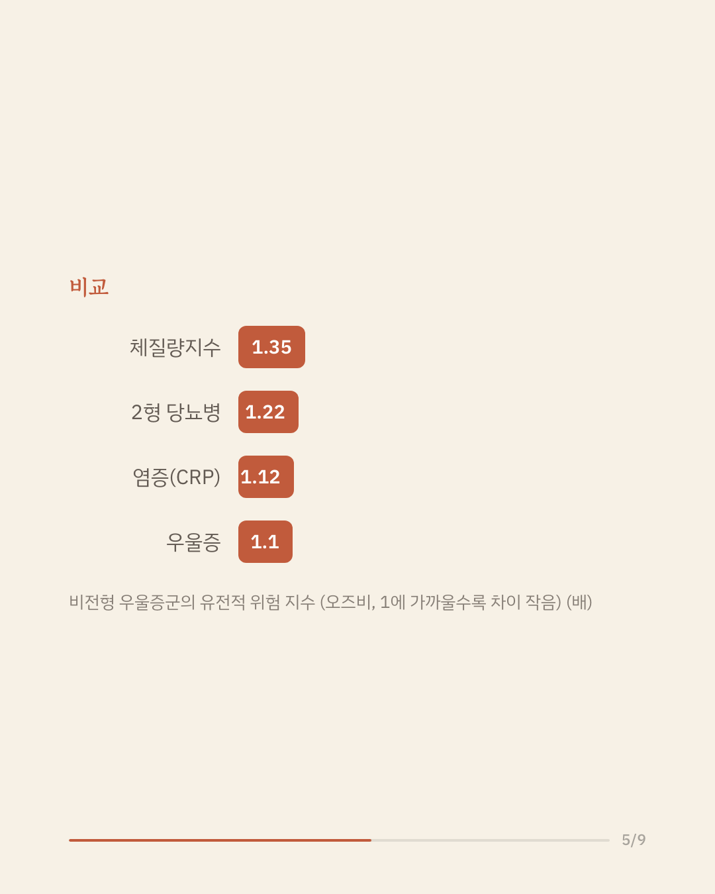
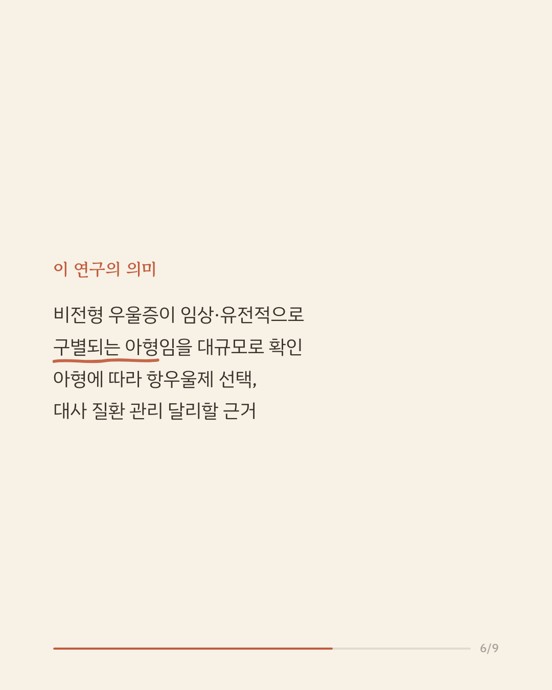
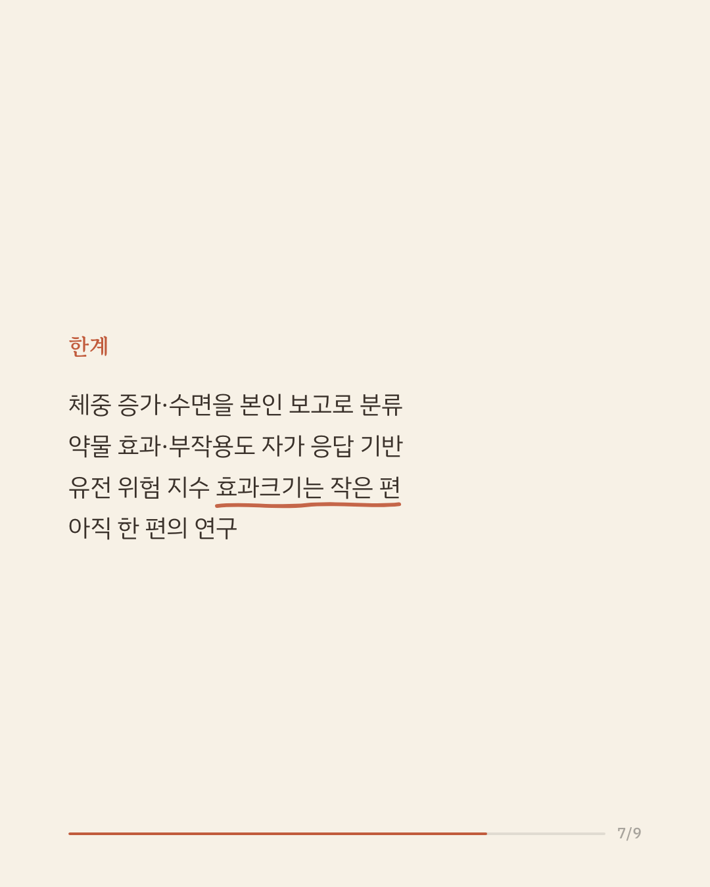
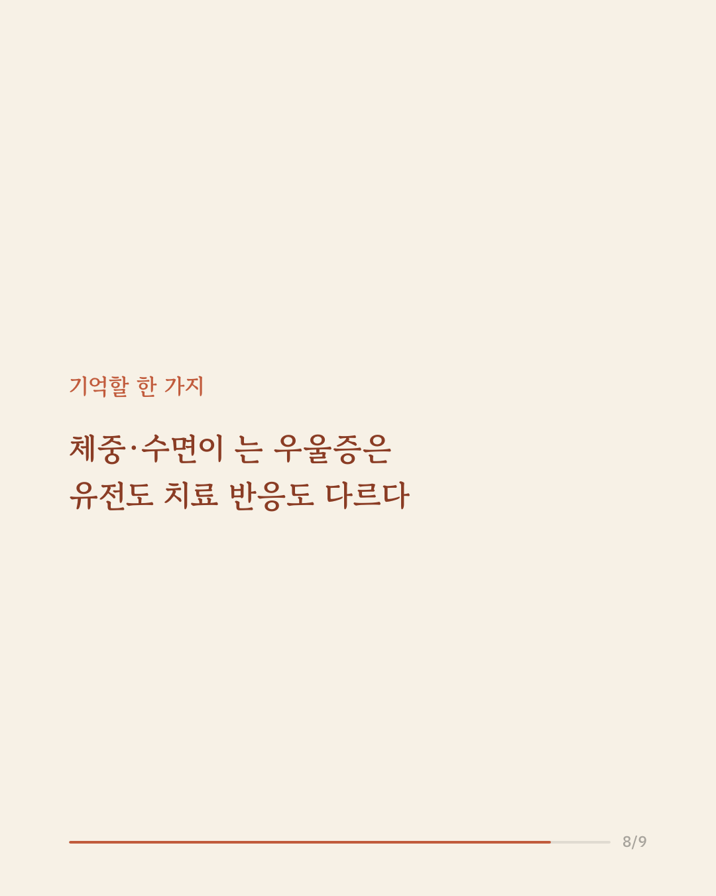
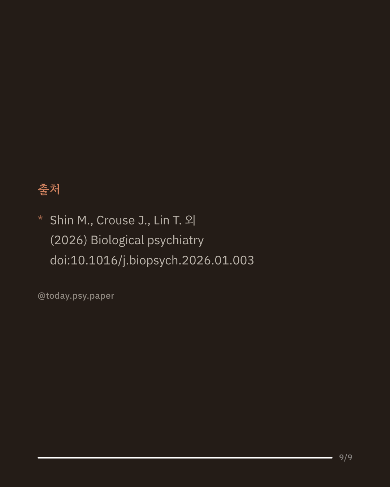

우울증은 보통 입맛이 떨어지고 잠이 줄지만, 반대로 체중이 늘고 잠이 늘어나는 유형도 있습니다. 이런 '비전형 우울증'이 정말 구별되는 아형인지, 항우울제 반응이 다른지는 오랫동안 논쟁거리였습니다. 호주 연구진은 우울증 유전 연구에 참여한 1만 4,897명의 임상 정보와 유전 정보를 함께 분석했습니다. 참가자의 21%가 비전형 우울증으로 분류되었고, 이들은 발병 나이가 더 이르고 증상이 더 심했으며 저녁형 생활 패턴과 낮 시간 햇빛 노출 감소가 관찰되었습니다. 또한 비만·2형 당뇨병·염증 관련 유전적 위험 지수가 더 높았고, SSRI·SNRI 계열 항우울제의 효과는 상대적으로 낮게, 체중 증가 같은 부작용은 더 많이 보고되는 것과 관련이 있었습니다. 연구진은 이 결과가 비전형 우울증을 별도의 아형으로 보고 치료 선택과 신체 건강 관리에 활용할 근거가 된다고 보았습니다. 다만 우울증 아형과 약물 반응이 모두 본인 보고에 의존했고 유전 위험 지수의 효과크기 자체는 작은 편이며, 단일 연구이므로 확대 해석은 조심해야 합니다. 출처: Biological Psychiatry (2026), 'Atypical Depression Is Associated With a Distinct Clinical, Neurobiological, Treatment Response and Polygenic Risk Profile' #임상심리 #정신건강정보 #비전형우울증 #항우울제 #심리학연구
python3 publish.py 41534638